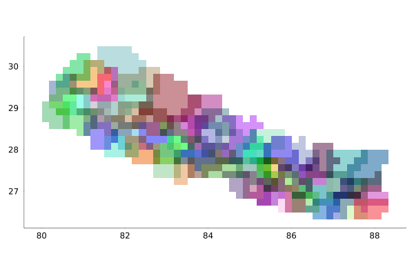
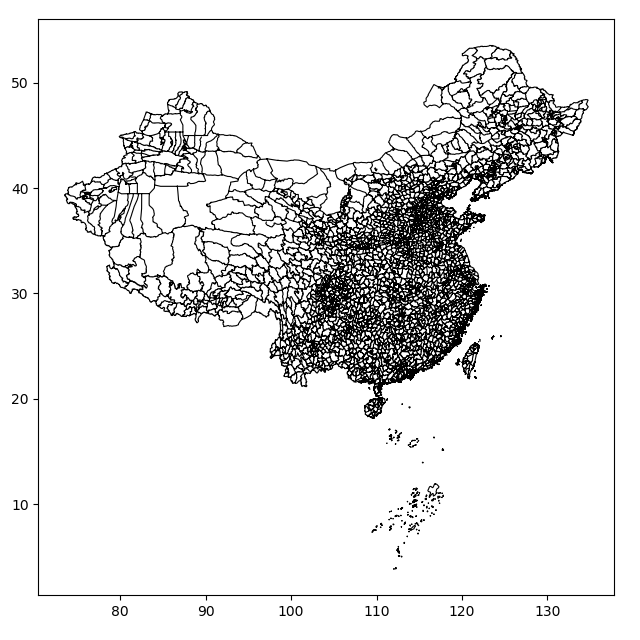
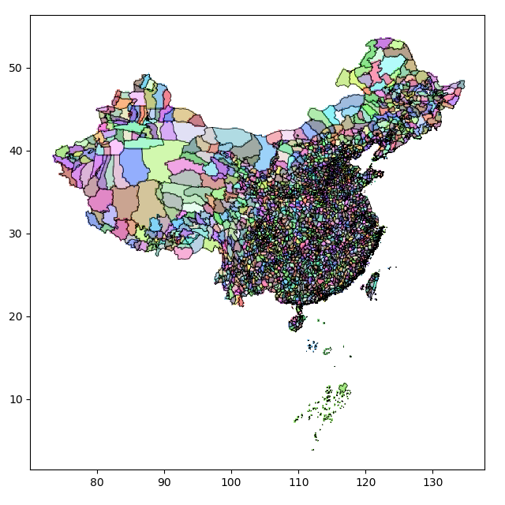
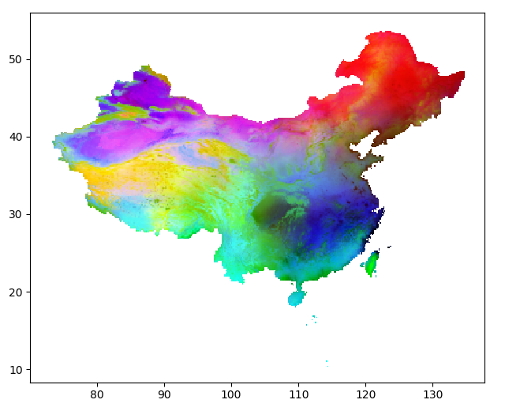

Graphics
Objects in Mikrubi of various types (shape files, rasters, raster stacks, Mikrubi.CtPixels instances, Mikrubi fields) can be plotted by Plots or by PyPlot.
Plotting with Plots
After loading the Plots package, the objects can be plotted by plot or plot!.
Example of Prinsepia utilis
Here we use the distribution of Prinsepia utilis (Rosaceae) in Nepal as an example. First we get all the objects prepared.
using Mikrubi
using Plots
import GADM
import RasterDataSources; const RDS = RasterDataSources
shppath = GADM.download("NPL")
get!(ENV, "RASTERDATASOURCES_PATH", tempdir())
RDS.getraster(RDS.WorldClim{RDS.BioClim}, res="10m")
climpath = RDS.rasterpath(RDS.WorldClim{RDS.BioClim})Illustrating the shape file
The variable shptable, what is read through readshape, called a shape file here, can be plotted.
shptable = readshape(shppath, 1);
plot(shptable)
savefig("plots_shptable.png")Illustrating the raster layers
We read the WorldClim raster layers, and extract the first raster layer from the stack, and then plot it.
layers = readlayers(climpath)
layer = first(layers)
plot(layer)
savefig("plots_layer.png")Illustrating the rasterization result
Here ctpixels is the object storing the rasterization result, although in many cases the result is hidden in makefield.
ctpixels = rasterize(shptable, layer);
plot(ctpixels)
savefig("plots_ctpixels.png")
Illustrating the Mikrubi field
A Mikrubi field cannot be plotted solely, because it does not contain enough information for illustrating. It must follow the corresponding raster grid in the argument list.
field, ylayers = makefield(layers, shptable);
plot(layer, field)
savefig("plots_field.png")
Plotting with PyPlot
Since the PyPlot plotting engine is substantially the wrapped Python package matplotlib, users who wish to use PyPlot have to manually install the package, and then tell Mikrubi to use it by the following lines.
using PyPlot
setplot(PyPlot)Four functions are provided to illustrate the objects of different types.
Mikrubi.showshptable — Functionshowshptable(shptable; kwargs...)Show lines from polygons in shptable. Identical segments are reduced as one.
Mikrubi.showlayer — Functionshowlayer(layer; f=identity, kwargs...)Show a layer. Keyword argument f = identity is a function acted separately on every element. A possible alternative is f = x -> x ^ 0.4.
Mikrubi.showfield — Functionshowlayer(layer; f=identity, kwargs...)
showfield(field, layer; f=tiedrank, kwargs...)Show geographic information and environmental information of a Mikrubi model. The three principal components are reflexed in red, green, and blue. Keyword argument f = tiedrank is a function acted on columns of field.vars as a whole. A possible alternative is f = identity.
Mikrubi.showctpixels — Functionshowctpixels(ctpixels; salt=20, kwargs...)
showctpixels(ctpixels, layer; salt=20, kwargs...)Show a Mikrubi.CtPixels. Every county is assigned a hash color (influenced by a fixed salt value also), and every pixel has the composite color from all counties assigned to it. Empty cells are depicted white.
Example of Allium wallichii
In the beginning, here we get the packages, path strings, and decoration functions ready:
using Mikrubi
using PyPlot
setplot(PyPlot)
shppath = "path/to/china/counties.shp";
climpath = "path/to/worldclim/layers";
ctlistpath = "path/to/occupied/county/list.txt";
largeaxis() = gca().set_position([0.06, 0.07, 0.9, 0.9])
worldwide() = (xlim(-180, 180); ylim(-90, 90))Illustrating the shape file and the raw layers
Now the workflow is disassembled into steps, and we check the outputs by illustrating them.
First of all, a shape file is read into Julia. We can see clearly that the boundaries of counties of China plotted in black line.
shptable = readshape(shppath)
figure(figsize=(6.4, 6.4))
showshptable(shptable)
largeaxis()
savefig("pyplot_shptable.png")
close()
Then, a series of WorldClim climatic factor layers are read in, and the first layer among them is illustrated.
layers = readlayers(climpath)
figure(figsize=(6.4, 3.2))
set_cmap("viridis")
showlayer(first(layers))
largeaxis()
worldwide()
savefig("pyplot_rawlayer1.png")
close()
Illustrating the rasterization result
Later, counties are rasterized using the grid defined by the layers. Every exclusive pixel is assigned the characteristic color of the county it belongs to, while pixels shared by multiple counties are dyed composite (thus always darker) colors.
ctpixels = rasterize(shptable, first(layers))
figure(figsize=(6.4, 6.4))
showctpixels(ctpixels, first(layers))
showshptable(shptable, lw=0.5)
gca().set_aspect("auto")
largeaxis()
savefig("pyplot_ctpixels.png")
Zoom in, and details of the rasterization result are clearer.
xlim(88, 98)
ylim(30, 40)
savefig("pyplot_ctpixels2.png")
close()
Illustrating the extracted layers and the Mikrubi field
Then, a Mikrubi field is constructed from the results above. Notable, layers lie in the input argument list at both the first and the third places. Layers at the first place are masked by the rasterization result and transformed into fewer (by default, three) layers by principal component analysis, and the results are finally assigned to elayers here. Meanwhile, layers at the third place undergo the same processes but no masking is applied, whose results are assigned to eplayers.
Now check the images of first(elayers) and first(eplayers) under the same clim, and we can see that they are actually identical on their overlapping part — because they are derived from the same input layers and have experienced the same operations.
field, elayers, eplayers = makefield(layers, ctpixels, layers)
figure(figsize=(6.4, 5.2))
showlayer(first(elayers))
gca().set_aspect("auto")
largeaxis()
clim(-6, 2)
savefig("pyplot_pcalayer1.png")
close()
figure(figsize=(6.4, 3.2))
set_cmap("viridis")
showlayer(first(eplayers))
largeaxis()
worldwide()
clim(-6, 2)
savefig("pyplot_gpcalayer1.png")
close()
At the same time, we may check the Mikrubi field just obtained visually in RGB space (skewed by f = tiedrank in showfield for better image representation). Parts of China are dyed different colors, and the pattern does coincide with our knowledge.
figure(figsize=(6.4, 5.2))
showfield(field, first(layers))
gca().set_aspect("auto")
largeaxis()
savefig("pyplot_field.png")
close()
Illustrating the predictions
Finally it is the fitting and the predictions. Since the model here is in high dimensionality beyond imagination, we turn to check the images of the predictions. Analogously, under the same clim values, the predicted regional distribution (geodist) and the predicted global distribution (ggeodist) are identical over their overlapping area. Using graphics, we can confirm that everything is in accordance with expectation.
ctlist = readlist(ctlistpath)
model = fit(field, ctlist)
geodist = predict(elayers, model)
figure(figsize=(6.4, 5.2))
set_cmap("CMRmap")
showlayer(geodist, f = x -> x ^ 0.35)
gca().set_aspect("auto")
largeaxis()
clim(0, 0.45)
savefig("pyplot_geodist.png")
close()
ggeodist = predict(eplayers, model)
figure(figsize=(6.4, 3.2))
set_cmap("CMRmap")
showlayer(ggeodist, f = x -> x ^ 0.35)
largeaxis()
worldwide()
clim(0, 0.45)
savefig("pyplot_ggeodist.png")
close()